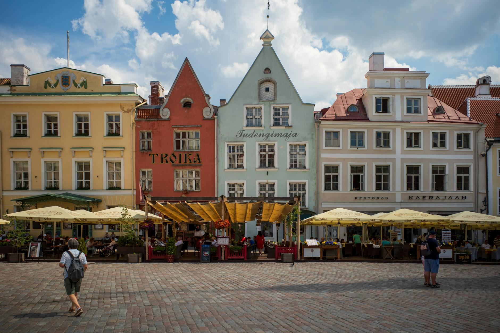
Thursday: Fly SAN → Tallinn (~16h)
- United + Finnair
- Land Friday afternoon

Three medieval old towns in a row, plus the Curonian Spit sand dunes.
Stops: Tallinn · Lahemaa · Riga · Sigulda · Vilnius · Trakai · Curonian Spit
Temp: 70–75°F, sun until ~10:30 pm
Three medieval old towns in a row — Tallinn, Riga, Vilnius. Sea breezes at the Curonian Spit, late-night sunsets (sun until ~10:30 pm). ~70–75°F. Cruise daytrippers pack the old towns midday — eat early or late.

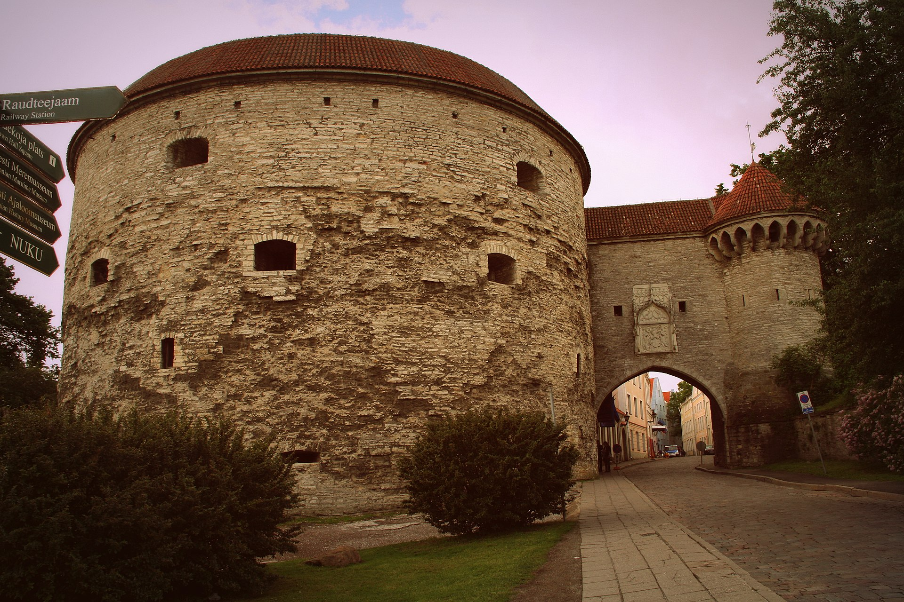
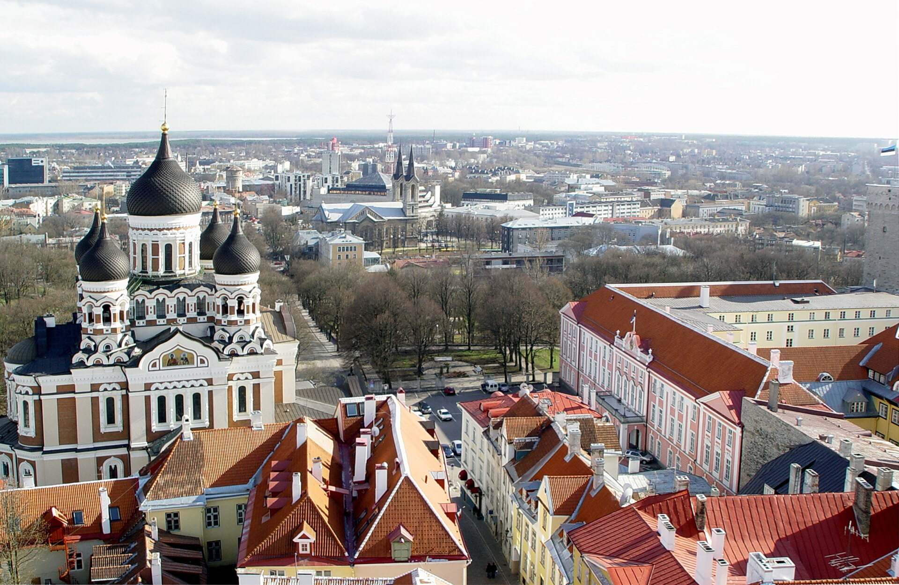
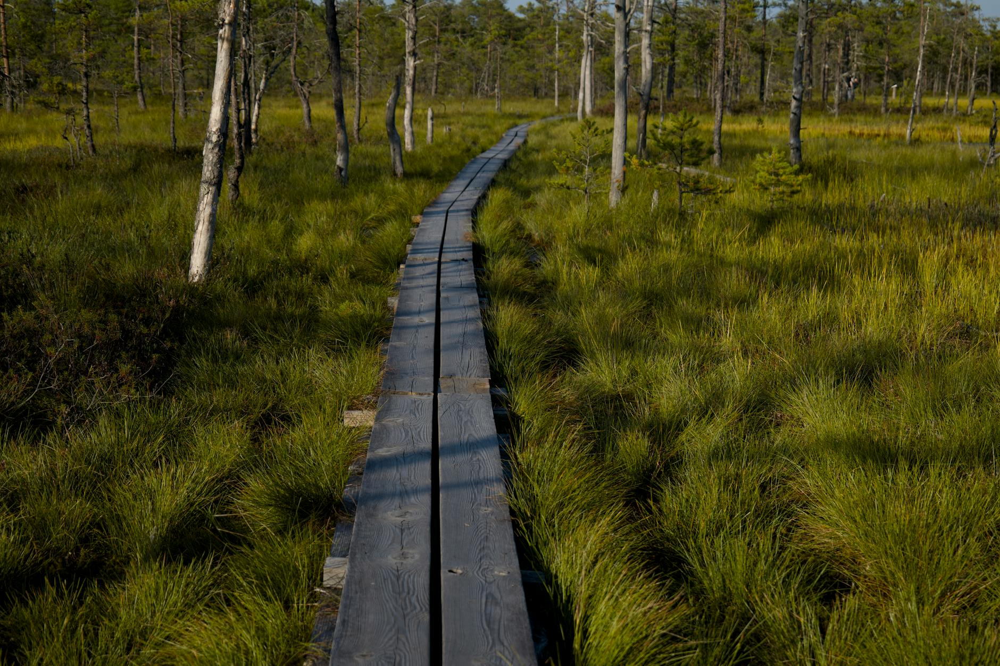
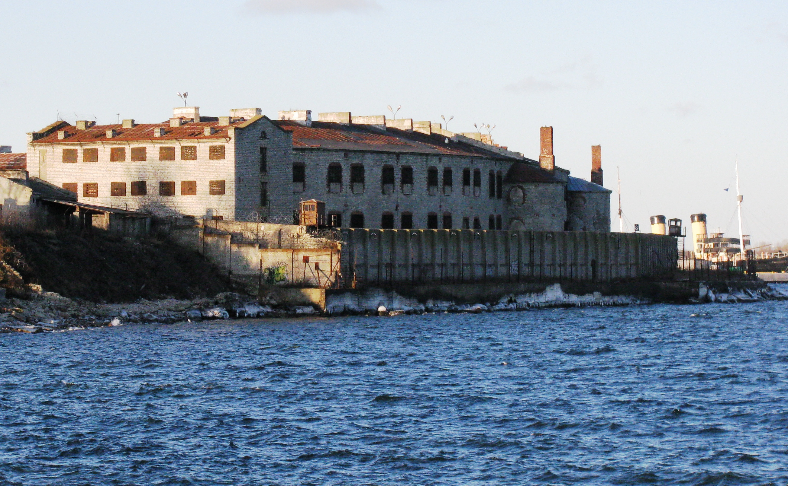
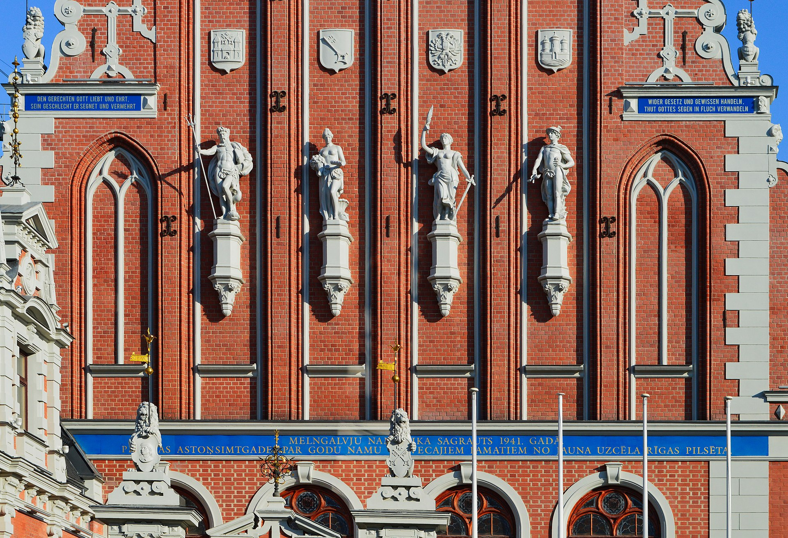
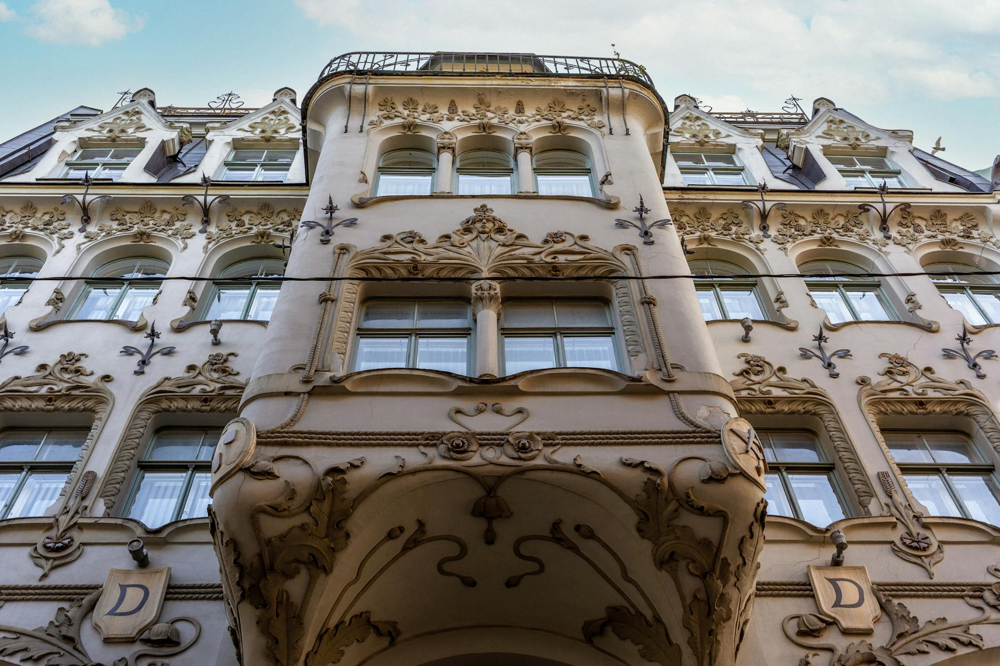
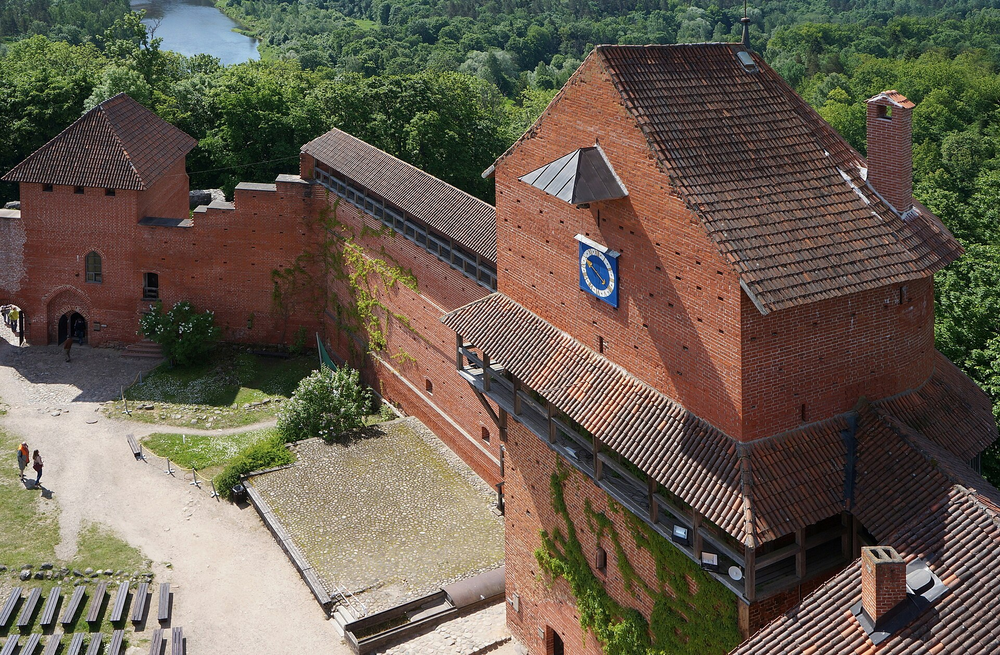
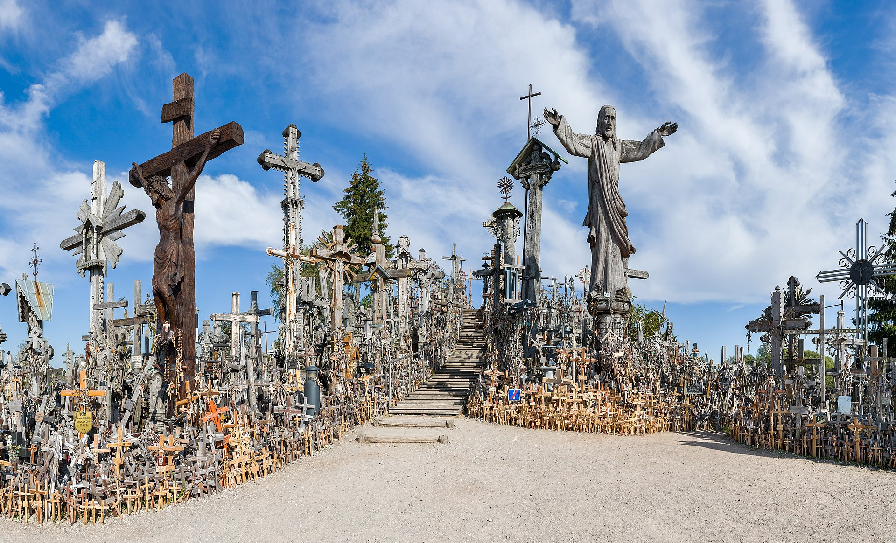
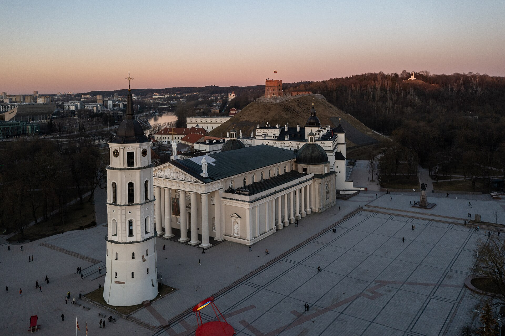


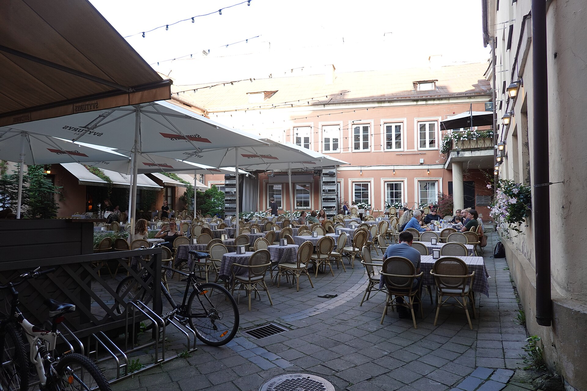